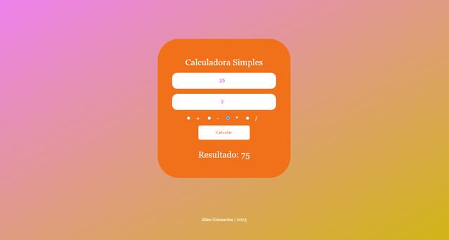

Projeto de calculadora simples para estudo de HTML, CSS e JavaScript. Veja o repositório no Github aqui.
Projeto de calculadora simples para estudo de HTML, CSS e JavaScript. Veja o repositório no Github aqui.
Criação de página usando HTMl e CSS sobre um Objetivo de Desenvolvimento Sustentável da ONU a escolher, atividade do projeto ElasNaTech2023. Veja o repositório no Github aqui.
Criação de cardápio simples em HTML e CSS para atividade 2 do projeto ElasNaTech. Veja o repositório no Github aqui.
Criação de página sobre Carol Shaw, parte do curso ElasNaTech. Desafio "Crie uma página usando apenas HTML e pouco CSS usando o tema "Mulheres na Tecnologia que lhe inspiram". Veja o repositório no Github aqui.
Criação de currículo em HTML para atividade 1 do projeto ElasNaTech. Veja o repositório no Github aqui.